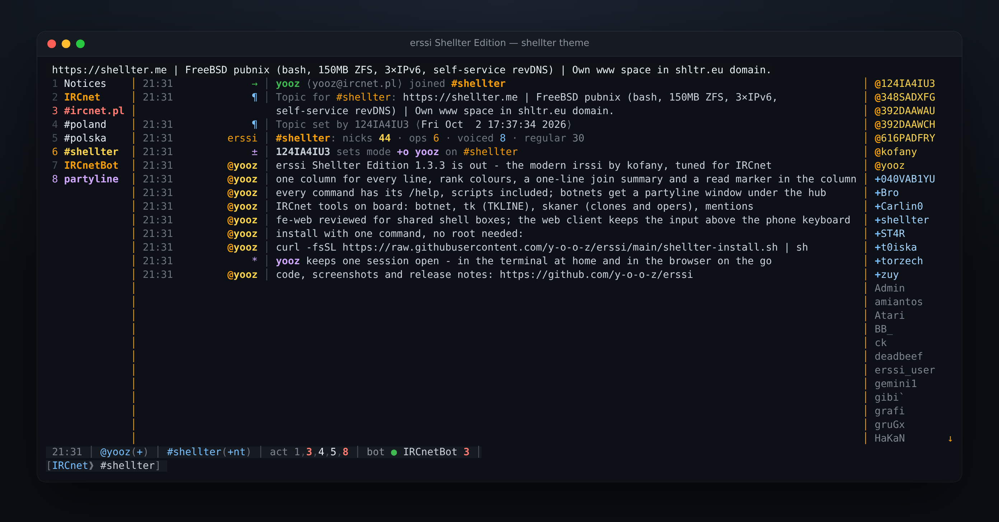

The modern irssi by kofany, tuned for people who live on IRCnet: a polished theme, help for every command, operator and botnet tools, and a security review of everything that faces the network.
$ curl -fsSL https://raw.githubusercontent.com/y-o-o-z/erssi/main/shellter-install.sh | sh

shellter theme.
erssi is the modern irssi created by Jerzy “kofany” Dąbrowski and the erssi-org team: sidepanels, mouse support, 24-bit colour, image preview, a web frontend and full irssi Perl script compatibility. The Shellter Edition by yooz keeps all of it and adds what an everyday IRCnet user and operator needs. It is built on irssi 1.4.5 and runs side by side with irssi, keeping its own configuration in ~/.erssi/.
Messages, events, server replies, WHOIS and notices share one column and one separator, so text always starts in the same place. Joining a channel prints one line: nicks 44 · ops 6 · voiced 8 · regular 30.
shellter in the colours of shellter.me and shellter-light for light terminals, with every text colour at 4.5:1 contrast or better. 24-bit colour where the terminal shows it, the nearest 256-colour entry where it does not.
/help covers every command, including erssi's own and those of the bundled scripts. Files in ~/.erssi/help/ are read first, so you can document your own scripts.
With NexusIRC the browser shows the same session, windows and history as the terminal, works on phones, and every command runs in erssi.
Bundled with the edition and loaded on demand with /script load <name>.
| Script | What it does |
|---|---|
| botnet.pl | Botnet partylines that speak IRC (psotnic, pt-pojeby, eggdrop): one connection and window per botnet, the state of every botnet in the statusbar, a retry limit for hubs that are down. |
| tk.pl | Temporary K-lines for IRCnet operators: nick → WHOIS → mask, never a guessed host; refuses masks that are too broad; preview with -dry; audit log. |
| skaner.pl | Clones and IRC operators on a channel after join, with an alert when a clone arrives. |
| mentions.pl | One window for highlights, private messages, notices and DCC, mirrored to a log file. |
| trackbar.pl | A read marker that branches off the theme's separator column. |
| webjournal.pl | Journals every window, so the web client shows the same history as the terminal. |
Authorization header, is compared in constant time, and after repeated failures logins are paced rather than locked, so nobody else can lock you out.FORTIFY_SOURCE, full RELRO. The test suite also runs under AddressSanitizer and UndefinedBehaviorSanitizer, and the web parsers are fuzzed.The installer checks the build dependencies and prints the exact package command for your system when something is missing, installs meson and ninja into a private Python environment if needed, builds the latest release, runs the test suite and installs to ~/.local/opt/erssi. Run it again to update. It works on Linux and FreeBSD.
Start erssi inside tmux so the session survives logging out, then /connect IRCnet. For a manual build, see the README.